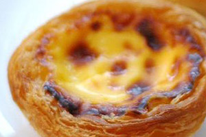

Pasteis de nata

Ingredients
- 600 g Puff Pastry
- 500 ml milk
- 1 lemon peel
- 1 cinnamon stick
- 60 g wheat flour
- 500g Sugar
- 250 ml water
- 7 gems
Instructions
- With the rolling pin, stretch the dough into a rectangle.
- Cut the dough into circles with a thickness of 1.5 cm
- Place them in a greased muffin Baking Pan
- Dissolve the flour in a little milk.
- Bring the remaining milk to the boil, add the cinnamon stick and lemon peel.
- When it starts boiling, add the flour.
- Stir until it starts to boil and turn off the heat.
- In a pan, let it boil sugar and water and stir . Once you start to boil, simmer exactly 3 minutes.
- Add the sugar syrup to the milk and mix well.
- Add the egg yolks with the cream and stir well.
- Fill the forms with the cream.
- Put them in a preheated oven at 250º for 17 minutes.
- After cooked, unmold. Serve hot or cold, sprinkled with powdered sugar or cinnamon.